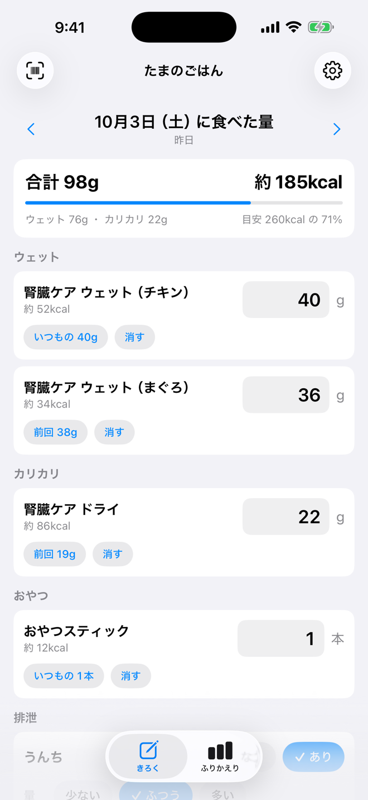
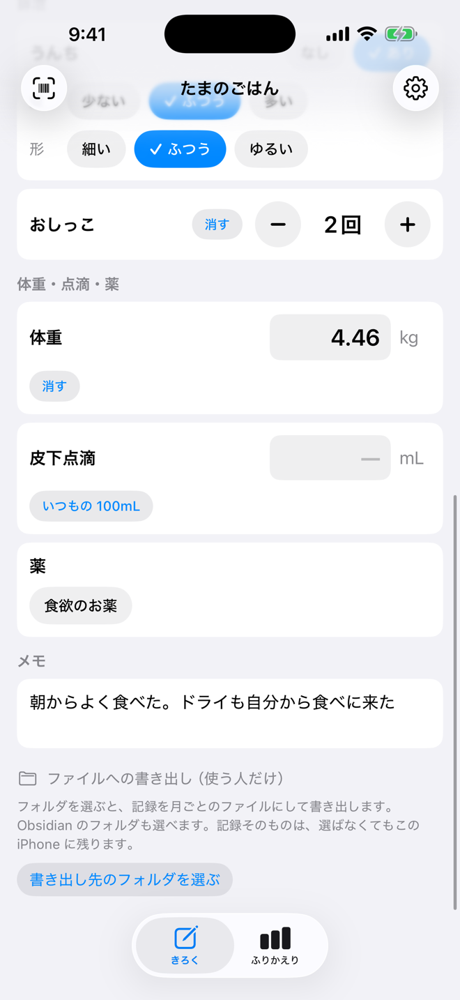
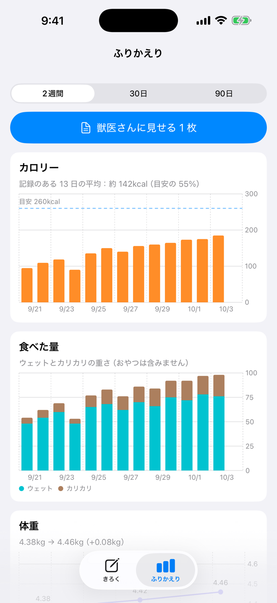

毎日やることは、ごはんごとにグラムを入れるだけ。合計のカロリーと、1 日の目安に対する割合がその場で出ます。「いつもの 40g」を押せば入力も要りません。

ごはんだけでなく、うんち・おしっこ・体重・皮下点滴・薬も同じ画面で記録できます。気づいたことはメモに残せます。

ふりかえりでは、カロリー・食べた量・体重の移り変わりをグラフで見られます。「獣医さんに見せる 1 枚」を押すと、期間のまとめと日ごとの表を PDF にして送れます。
ねこが食べたごはんの量を、グラムで記録する iPhone アプリです。自宅の腎臓病のねこの食事量を毎日量っていて、「昨日より食べたのか」をすぐ数字で知りたくて作りました。ごはんを一度登録しておけば、あとは毎日グラムを入れるだけです。
できること
- ごはんを選んでグラムを入れるだけで記録できます。カロリーと、1 日の目安に対する割合はその場で計算します
- ごはんの登録は、パッケージのバーコードを読むだけ。辞書に無い商品は、成分表をカメラで読み取ってカロリーを登録できます
- うんち、おしっこ、体重、皮下点滴、薬も同じ画面で記録できます
- カロリー・食べた量・体重の移り変わりをグラフで見返せます（2 週間・30 日・90 日）
- 「獣医さんに見せる 1 枚」を押すと、期間のまとめと日ごとの表を PDF にして、そのまま送れます
- 年齢と体重から、1 日に必要なカロリーの目安を計算できます
- 複数のねこを切り替えて記録できます
- 記録は iPhone の中だけに保存され、開発者には送られません。アカウントの登録も要りません。使う人だけ、記録をファイル（Markdown）に書き出せます。Obsidian のフォルダにも書けます
※ たべたくんは記録のための道具です。診断や治療の代わりにはなりません。バーコードから入るカロリーには、ネットで調べただけの「未確認」の値が含まれるので、パッケージの表示と見比べてからお使いください。
iPhone アプリApp Store端末内に保存無料広告なし